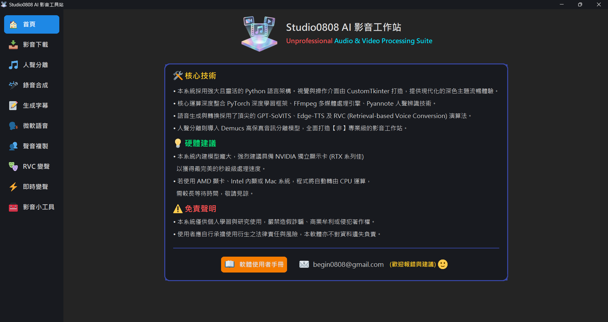

💡 Hardware Conclusion:
• This system runs massively large AI models. It is highly recommended to have an NVIDIA
dedicated GPU (RTX series preferred) for lightning-fast processing.
• If you are using an AMD GPU, Intel integrated graphics, or Mac, the program will
fallback to the CPU
for computation, which will take significantly longer. Please be patient.
This software integrates several cutting-edge open-source voice AI models (e.g.
Demucs, RVC,
GPT-SoVITS,
Whisper), all of which require substantial computing power.
Currently, 90% of mainstream open-source AI projects rely on a framework called PyTorch
combined with NVIDIA's proprietary Compute API
"CUDA". Because other GPU brands (like AMD) physically lack CUDA cores, the application
will determine that "no suitable AI accelerator was found" upon startup, and will automatically hand
over the task to the CPU
(indicated by the red text on the UI: Running in CPU mode).
Yes, the system fully supports multi-tasking!
The program is designed to use independent background threads or subprocesses for every time-consuming task (including formatting, downloading, vocal separation, etc.). As long as your hardware (CPU, RAM, GPU VRAM) is powerful enough, you can absolutely:
Tasks will not interfere with each other, and the main window will remain responsive. The only bottleneck will be your computer's hardware limits (e.g. running out of VRAM if too many AI models are loaded simultaneously).
This software and all built-in integrated open-source tools (including Video Downloader, Voice Models, Translators, etc.) are strictly for personal study, research, and academic exchange only.
To keep your workspace clean, outputs and dependency models are managed in unified directories:
Outputs\ (All exported work)
Downloads\: Raw files from the Video DownloaderVocals\: Separated clean vocal tracks and instrumentalsRVC\: Audio generated from RVC Voice ConversionCloned\: Fully synthesised speech from GPT-SoVITSmodels\ (Function-specific AI modules)
.pth, .ckpt, or
.index voice model files from the web, please drop them into their
corresponding folders based on functionality (models\RVC or
models\SoVITS).
If you want to pass the "Realtime VC" modified voice into Discord, Line, or In-game Voice Chat so others can hear you, you must install a free "Virtual Audio Cable" software, such as VB-Audio Cable.
This acts like a virtual wire routing our program's output track directly into Discord's microphone input. For detailed configuration instructions, refer to the [Setup Guide] target button on the Realtime VC UI.
This software integrates the following robust open-source engines, fully optimized for compatibility with the latest hardware (including RTX 50 series):